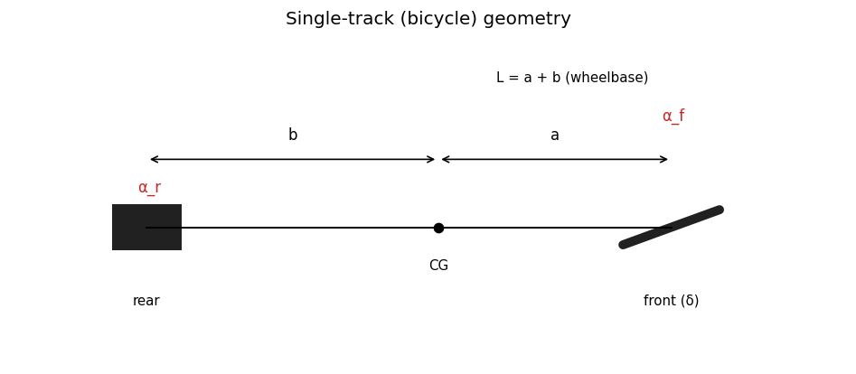
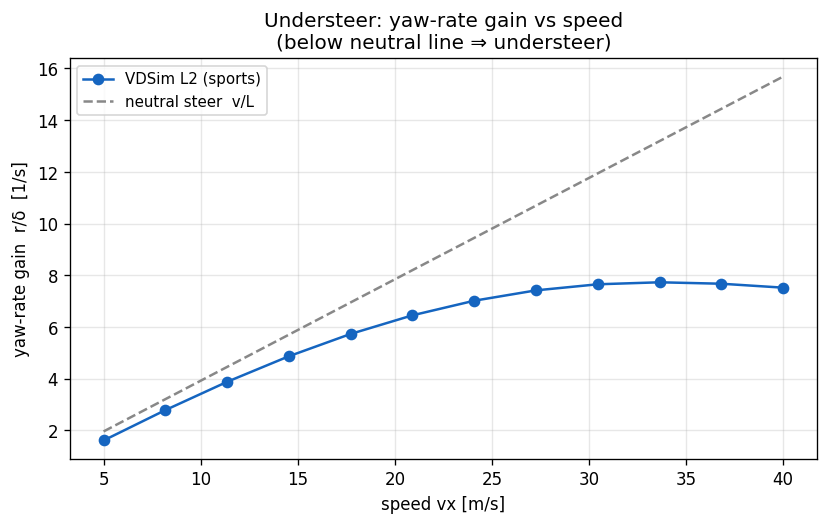
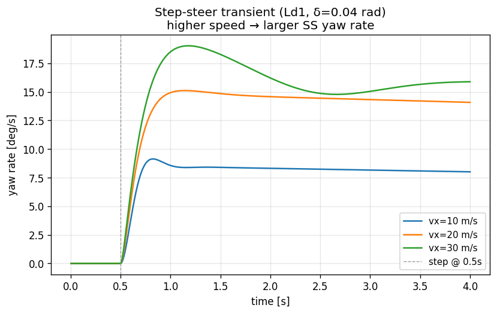

04. Ld1-Bicycle (Single-Track, 5 DOF)¶
Learning objectives¶
이 chapter 를 마치면 다음을 할 수 있다.
- single-track 모델의 가정과 적용 범위를 한계와 함께 설명한다.
- 5-DOF state vector 의 각 성분과 적분 구조를 기술한다.
- linear-bicycle 의 steady-state yaw rate 와 understeer gradient \(K_{us}\) 를 유도하고, 그것이 simulator 검증의 baseline 이 되는 이유를 설명한다.
- longitudinal weight transfer 의 self-referential 구조와 1-step lag 처리의 타당성을 판단한다.
- Ld1 아래 rung 인 Lk-Kinematic(타이어·slip 없는 기하 모델)의 식과 적용 범위를 구분한다 (§4.14).
Prerequisites¶
- Chapter 01 — frame, slip 정의, 부호 약속.
- Chapter 02 — body-frame EoM, kinematic \(a_x\).
- Chapter 03 — Pacejka 로부터 \(F_x, F_y, M_z\).
- 외부 reference — Genta §4-5, Rajamani §2 (SAE 부호 주의).
4.1 동기 — 왜 single-track 부터인가¶
차량 동역학의 핵심 거동 (cornering / braking / accel) 은 single-track 만으로 정성적으로 정확히 표현된다. 4-wheel per-tire 모델 (Ld2) 은 weight transfer 의 정량 정확도를 더하지만, 제어기 개발 단계에서는 single-track 으로 충분하다. 제어기가 Ld1 에서 동작하면 더 높은 fidelity (Ld2-Ld3) 로 옮겨도 거의 그대로 동작한다 — 그렇지 않다면 제어기의 모델 invariance 가 부족한 것이다.

위 그림은 CG 로부터 front/rear axle 거리 \(a, b\), 조향각 \(\delta\), 그리고 각 axle 의 slip angle \(\alpha_f, \alpha_r\) 의 기하 관계를 보여준다.
4.2 가정¶
| 가정 | 의미 | 깨지는 case |
|---|---|---|
| Single-track | 양 wheel 을 axle 평균으로 (wheel 수 = 2) | chapter 05 (per-tire 4) |
| Planar | roll/pitch = 0, yaw 만 | chapter 06 (Ld3) |
| Static Fz (lateral) | longitudinal transfer 만, lateral 무시 | chapter 05 (lateral transfer) |
| Per-axle Pacejka | axle Fz + 평균 slip 으로 1 회 call | chapter 05 (per-tire 4 call) |
| Rigid wheel-spin | spin inertia = disk approximation | — |
4.3 State vector (5 DOF)¶
적분 상태:
물리적 DOF 는 5 개 (\(v_x, v_y, \psi\) + 2 wheel spin) 이며, 적분기 관점에서는 8 개의 first-order ODE (position 3 개는 kinematic). \(\omega_f, \omega_r\) 는 front/rear axle 의 wheel spin.
state 와 frame 약속의 매핑 (position=world, velocity=body 등) 은 chapter 01 §1.5 의 ABI 약속을 따른다.
4.4 Bicycle EoM¶
body-frame Newton-Euler (chapter 02) + per-axle tire force:
힘의 구성 (wheel frame → body frame 회전 포함):
rear 는 un-steered 이므로 \(F_{x,\text{body},r} = F_{x,\text{wheel},r}\), \(F_{y,\text{body},r} = F_{y,\text{wheel},r}\). \(a, b\) 는 CG-to-front, CG-to-rear 거리.
4.5 Per-axle Fz — longitudinal weight transfer¶
Static Fz:
Longitudinal transfer (axle 단위):
부호 직관:
- 가속 (\(a_x > 0\)) → \(\Delta F_{z,\text{long}} > 0\) → rear loaded, front 가 덜 loaded.
- 제동 (\(a_x < 0\)) → front loaded (nose dive).
Self-referential 구조와 1-step lag¶
\(a_x = F_{x,\text{total}}/m\) 인데, \(F_{x,\text{total}}\) 은 tire \(F_x\) 의 합이고, tire \(F_x\) 는 Pacejka 가 \(F_z\) 의 함수로 계산하며, \(F_z\) 는 다시 \(a_x\) 의 함수다. 즉 \(a_x = f(F_z(a_x))\) 의 self-referential 구조 — 엄밀히 풀려면 fixed-point iteration 이 필요하다.
표준적 해법은 1-step lag: 직전 substep 의 \(a_{x,\text{prev}}\) 를 사용한다.
substep 이 충분히 작으면 (1 ms 수준) lag bias 가 무시 가능하다. 정량 검증은 §4.8 과 §4.13 의 implementation note 참조. iteration 의 trade-off 는 chapter 11 (수치 적분) 에서 다룬다.
Aero downforce¶
\(v_x|v_x|\) 표기로 후진 시 부호 반전. 승용차는 \(C_l \approx 0\), sports/race 에서 nonzero.
4.6 Drive / brake torque 분배¶
Drive split (drive_type 별):
- FWD: front axle 만.
- RWD: rear axle 만.
- AWD: front/rear 50:50.
Brake (brake_bias_front):
EBD (electronic brake distribution) 활성 시 dynamic bias:
제동 시 front 가 더 loaded → bias 증가 → front 가 더 많이 제동 → ABS 유사 효과. wheel spin 부호는 \(\tanh(\omega/w)\) 의 smooth sign 으로 처리해 정지 근처 발진을 막는다.
4.7 Linear-bicycle steady-state (검증 baseline)¶
linear region 의 SS yaw rate. 가정:
- 작은 \(\alpha\) → \(F_y = -C_\alpha \alpha\) (\(C_\alpha = B C D F_z \mu\), Pacejka linear slope).
- \(v_x = \text{const}\), \(\dot v_y = \dot r = 0\), \(v_y \ll v_x\).
SS EoM:
slip angle 의 linear 표현 (ISO 8855 부호):
\(F_{y,f} = -C_f \alpha_f\), \(F_{y,r} = -C_r \alpha_r\) 대입 후 2×2 선형 시스템:
Understeer gradient¶
\(K_{us} > 0\) understeer, \(< 0\) oversteer, \(= 0\) neutral. \(v_x \to \infty\) 에서 understeer 차량은 yaw rate 증가가 둔화, oversteer 는 발산한다.
Neutral steer 의 special case: \(a C_f = b C_r\) 이면 \(K_{us} = 0\), \(r_{\text{neutral}} = v_x \delta / L\) (Ackermann). cornering stiffness 가 질량 분포에 비례해 scale 되면 (\(C_f/C_r = F_{z,f}/F_{z,r} = b/a\)) 자동 성립하나, 차종이 바뀌면 깨진다.

위 그림은 실제 모델 sweep — yaw-rate gain \(r/\delta\) 가 고속에서 neutral 선 \(v/L\) 아래로 처지고 saturate 하는 understeer 의 교과서적 거동을 보여준다.

step 입력 후 yaw rate 가 속도별로 다른 정상값으로 수렴하는 과도 응답.
4.8 검증 전략¶
| 검증 | 식 / 케이스 |
|---|---|
| SS yaw rate vs 해석값 | \(v_x=10\), \(\delta=0.05\) 에서 sim 과 linear-bicycle 해석값 오차 5 % 이내 |
| Linear region 일관성 | (vx, δ) 격자에서 \(a_y < 3\) m/s² cell 의 오차 ≤ 10 % |
| Drag coast | aero drag only 의 \(v_x(t) = v_{x0}/(1 + v_{x0} k t)\) 해석해와 ±5 % |
| weight transfer | brake step 의 \(F_{z,f}\) 비율이 해석값과 0.1 % 이내 |
sim vs 해석값의 차이 일부는 Mz aggregation (해석 bicycle 은 무시) 와 small nonlinearity 진입의 효과로, 구현 오류가 아니다. test 매핑은 §4.13 참조.
4.9 한계¶
| 항목 | 한계 | 다루는 chapter |
|---|---|---|
| Lateral weight transfer | 없음 | chapter 05 |
| Differential | 없음 (axle 평균) | chapter 05 |
| Suspension dynamics | 없음 | chapter 06 |
| Combined slip | friction-ellipse rescale 만 | chapter 03 §3.4 |
| Driver model | 외부 제어기 사용 | chapter 10 |
single-track 자체는 제어기 개발용으로 충분하다.
4.10 다음 chapter 와의 연결¶
single-track 은 axle 단위 Fz 만 다룬다. chapter 05 (Ld2) 는 이를 per-tire 4-wheel 로 확장하여 lateral weight transfer, Ackermann geometry, differential 을 더한다. 같은 base EoM (chapter 02) 위에 force 구성만 정교해진다.
4.11 참고문헌¶
- Genta, G. Motor Vehicle Dynamics, 2014. §4 single-track, §5 understeer/oversteer.
- Rajamani, R. Vehicle Dynamics and Control, 2012. §2 bicycle derivation (SAE 부호).
- Gillespie, T. Fundamentals of Vehicle Dynamics, SAE, 1992. understeer gradient.
4.12 Self-check¶
1. single-track 에서 제어기를 개발한 뒤 Ld2-Ld3 로 옮겨도 되는 근거는?
핵심 거동 (cornering/braking/accel) 이 single-track 으로 정성적으로 정확하므로, 모델 invariant 한 제어기라면 fidelity 를 올려도 동작한다. 옮겨서 깨진다면 제어기가 특정 fidelity 에 과적합된 것.2. K_us > 0 차량의 고속 거동은?
understeer. $r_{ss} = v_x\delta / (L(1+K_{us}v_x^2))$ 에서 분모가 $v_x^2$ 로
커져 yaw rate gain 의 증가가 둔화된다. 고속에서 "밀리는" 안정적 거동.
3. weight transfer 의 self-referential 구조란?
$F_z$ 가 $a_x$ 의 함수이고 $a_x = F_x/m$ 인데 $F_x$ 는 Pacejka 가 $F_z$ 로 계산 → $a_x = f(F_z(a_x))$. 닫힌 형태로 풀려면 fixed-point iteration 또는 1-step lag 근사가 필요하다.4. neutral steer 가 default tire 에서 자동 성립하는 조건은?
$C_f/C_r = b/a$, 즉 cornering stiffness 가 static Fz 분포($F_{z,f}/F_{z,r}=b/a$)에 비례할 때. 이때 $a C_f = b C_r$ 이 되어 $K_{us}=0$. 차종(질량분포)이 바뀌면 깨진다.5. aero downforce 식에 vx·|vx| 를 쓰는 이유는?
aero 힘은 $v_x^2$ 에 비례하지만 방향은 진행 방향. $v_x|v_x|$ 로 쓰면 후진
($v_x<0$) 시 부호가 자동 반전되어 항상 진행을 거스르는 drag/downforce 가 된다.
4.13 VDSim 구현 노트¶
[VDSim impl] § 4.3 — State 매핑
core/src/bicycle_dynamics.cpp:89-99의Derivstruct 이 state vector 와 1-to-1.wheel_spin[FL]=wheel_spin[FR]=ω_f,wheel_spin[RL]=wheel_spin[RR]=ω_r(axle 평균을 두 wheel 에 복제).[VDSim impl] § 4.4 — EoM 코드
core/src/bicycle_dynamics.cpp:165-203가 §4.4 의 force 구성 + EoM 그대로.[VDSim impl] § 4.5 — 1-step lag 코드 + 검증
core/src/bicycle_dynamics.cpp:120-127:const double dFz_long = m * ax_prev_ * h_cg / L; double Fz_f = m * kGravity * b / L + Fz_aero_f - dFz_long; double Fz_r = m * kGravity * a / L + Fz_aero_r + dFz_long;brake step 검증: 실측 \(a_x = -3.36\) m/s² → 해석 \(\Delta F_z = 1027\) N. sim 의 \(F_{z,f}\) 비율 1.125 vs 해석 1.126 — 오차 0.1 %. 1-step lag 가 1 ms substep 에서 무시 가능 정확도임을 확인.
[VDSim impl] § 4.7 — 해석 baseline 코드
tests/integration/test_bicycle_steady_state.cpp:42-70의analytical_yaw_rate가 §4.7 의 2×2 시스템 해 그대로. sim 출력과 대조하는 ground truth.[VDSim impl] § 4.8 — 검증 test
검증 test SS yaw rate vs 해석 BicycleSteadyState.LeftTurnYawRateMatchesAnalyticallinear region 격자 StepSteerSweep.LinearRegionWithinTenPercentdrag coast LongScenarios.DragCoastMatchesAnalytical[VDSim impl] § 4.x — 최소 사용 예제
auto dyn = vdsim::create_bicycle(); dyn->initialize(vp, tp, sp); vdsim::State s0; s0.velocity = {10, 0, 0}; dyn->reset(s0); vdsim::ContactArray contacts; // flat ground, mu = 1 for (auto& p : contacts) { p.is_valid = true; p.normal = {0, 0, 1}; p.mu_long = 1; p.mu_lat = 1; } vdsim::CmdL4 cmd; cmd.steer_angle_wheel = 0.05; for (int i = 0; i < 1000; ++i) dyn->step(cmd, contacts, 0.005); std::cout << "yaw rate = " << dyn->state().yaw_rate() << "\n";minimal controller-on-bicycle 루프 (Lc4-Pedal level). 상위 제어 cascade 는 chapter 07-09.
4.14 Lk — Kinematic bicycle (the precursor rung)¶
Ld1 아래의 가장 단순한 사다리 rung. 타이어 힘도 slip 도 없다 — 순수 기하·운동학 으로만 차량을 움직인다. path-planning / kinematic-MPC / 가장 가벼운 시각화에 쓴다.
- longitudinal: 가속도 \(a\) 는 pedal 에서 — 모터/브레이크 토크를 질량으로 환산한 cap 으로. \(a = \text{thr}\cdot A - \text{brk}\cdot B\), \(A = T_{\text{motor,max}}/(R\,m)\), \(B = T_{\text{brake,max}}/(R\,m)\). forward gear 면 \(v\ge0\) 로 clip(역주행 방지).
- lateral/yaw: \(\dot\psi = v\tan\delta/L\) — sideslip 없는 kinematic steering. 따라서 \(v_y=0\), \(a_y = v\dot\psi\) (구심).
- Fz: 동역학 없이 정적 배분 \(m g\,b/(2L)\)(front), \(m g\,a/(2L)\)(rear) 만 보고 (slip/transfer 없음).
Ld1(동역학 bicycle)과의 차이: Lk 는 tire 모델·slip·weight transfer 가 전부 없어 한계주행·제동 거동을 표현 못 한다. 대신 결정론적이고 빠르며, 경로 추종 기하의 baseline 이다. ISO 8855 frame.
[VDSim impl] § 4.14 — Lk 코드
core/src/kinematic_dynamics.cpp의KinematicBicycle(Level::Lk_Kinematic,create_kinematic()). substep Euler 적분,tire_forces/slip은 빈 배열. make_sim_session 의 level"K"/"L0"가 이 모델.